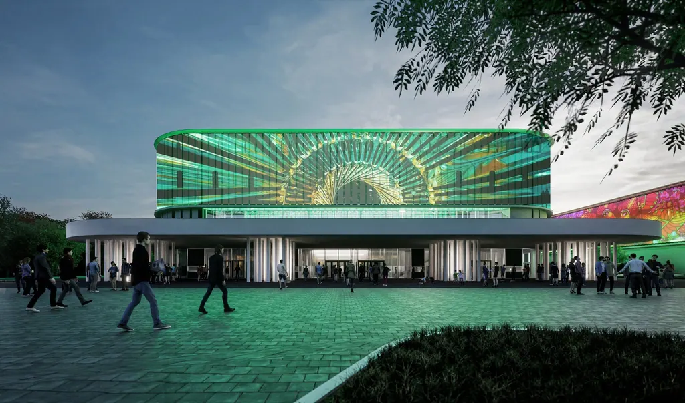

01
Tervezés
A tervezés párbeszéd, közöttünk. A legfontosabb, hogy értsem Önt, az igényeit. A terv nem rólam szól, sokkal inkább Önről. Én pusztán létrehozom az egységet szín, forma, igények és adottságok terén.


Kertvéllesy Építész Iroda · Pécs
Az iroda
Nyitott szemmel járok, érdekelnek a dolgok. Gondolkodom, mi miért működik valójában, mit miért szeretnek az emberek. Ez a szemlélet a munkám alapja. Tapasztalat és annak tudatossá tétele.
Legyen szó akár az otthonáról, akár a munkahelyéről, fontos, hogy azt üzenje, amit üzennie kell. A konyhába reggel süssön be a nap a kakaóra, az ablakon integethessünk apucinak, aki kocsit mos. Munkakörnyezete azt sugallja, amit Ön sugallani kíván az ügyfelei számára. Ha kell, kifinomultságot, melegséget vagy éppen meggyőzőerőt. Az emberek olvasnak a színek és formák világában, csak nem tudnak róla. Én finoman terelem, hangolom őket azért, hogy Önnek jobb legyen…

01
A tervezés párbeszéd, közöttünk. A legfontosabb, hogy értsem Önt, az igényeit. A terv nem rólam szól, sokkal inkább Önről. Én pusztán létrehozom az egységet szín, forma, igények és adottságok terén.
02
Mindenki vágyja a különleges, innovatív interiort, mely térélményt nyújt, mégis funkcionális; kívánja a vagány, újszerű exteriort, mely izgalmas, bevállalós, mégis gazdaságos. Küldetésünk, hogy professzionális módon, globálisan átgondolt projekteket valósítsunk meg Önnek.
03
Egy beruházás során – volumentől függetlenül – az Építtető célja a pénzügyi, műszaki és jogi biztonság megléte a megfelelő határidőtartás mellett. Ehhez megfelelő szakmai kompetenciával, hozzáállással rendelkező partnerekkel kell szerződjön, illetve együttműködjön (pl. kivitelező, beszállító, műszaki ellenőr, pályázatíró stb.).
4 év, több mint 5.000 nm közös tervezés és kivitelezés, közel 1 mrd forint beruházás. Számokban kifejezve így tudom bemutatni Gáborral közös együttműködésünk. És ami e mögött van, az a bizalom.
Gábor mutatta meg nekem, hogy a felelős tervezésben a megbízói célok kiszolgálása és formálása mellett tökéletesen megfér a tervezői szabadság és kreativitás is. Közös munkáinkban rendszeres élményem, ahogy az együtt gondolkodás formálja üzleti gondolkodásom, döntéseim. Megfigyelés, elemzés, döntés és ezek ismétlése. Közösen, bármikor, bárhol és bármennyiszer. Ehhez szükséges kellő kreativitás, rugalmasság, mértéktartó gondolkodás, illetve üzleti szemlélet, számomra ezek Gáborban mind tetten érhetők.